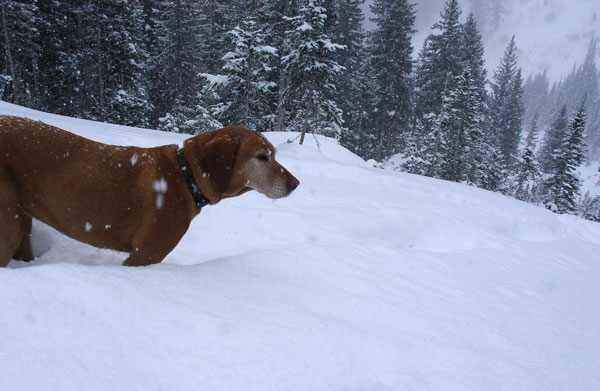

|
Somewhere in Porter Fork, Home run down West Porter

Found a little solitude up past Main Porterfork, just to the west
of Mount Raymond. With a few inches of dry new snow on top, the
skiing was incredible.
The Powder Porpoise after laying some tracks.
To get the most out of the home run, I thought
West Porter would be the way to go. Unfortunately, as the trail
over to the pass wasn't broken and it was late in the day, I feared
that I might not make it in time. Bad visibility and a couple of
blinding gusts helped me loose my bearings a couple times, but
the thought of dropping into an untracked West Porter Fork kept
me struggling along. When I made it to the pass, it was obvious
that the sun had set. But there was still enough light to see that
the area had been tracked out worse than I had ever seen before.
It felt a bit as if I had broken trail through a pristine backcountry
to get "in area" for a choppy, moguly, and icey home run. Not to
mention that the bottom of West Porter was horrible as the
weine wackers were out in force, and the very last 200ft had
under a foot of coverage.
But it's all good. Time and Ptex heal most wounds.
It was pitch black when I got to the freakmobile, the porpoise
was thuroughly pooped, and adventure had been had.
|